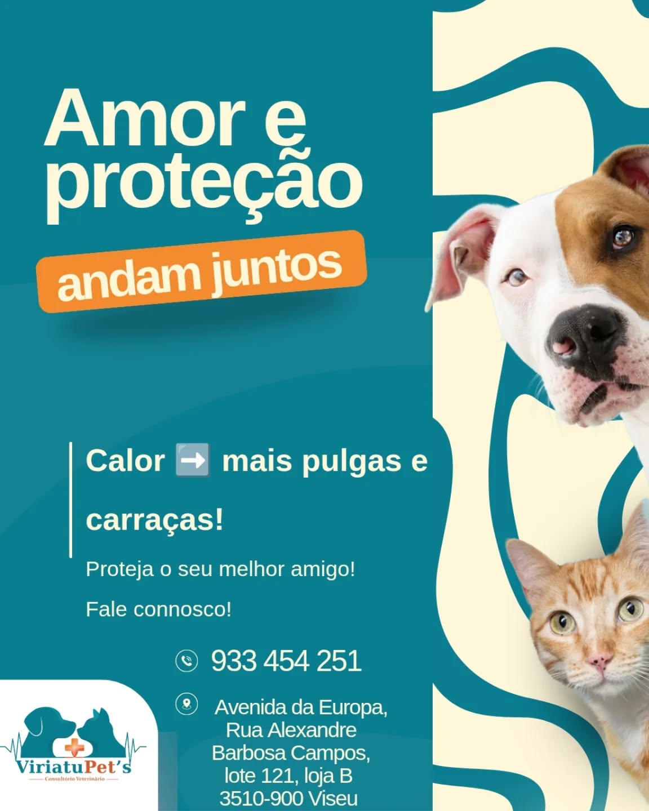
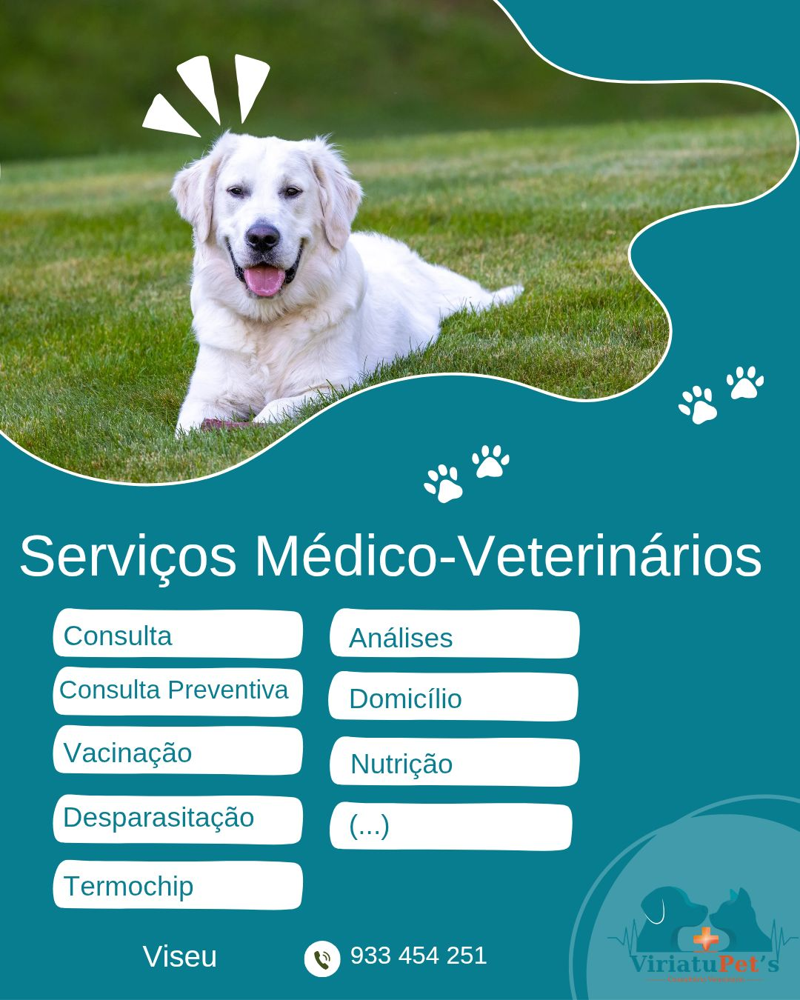

Consultas veterinárias com carinho, atenção personalizada e profissionalismo para cães e gatos, no coração de Viseu.

A ViriatuPet's nasceu em 2026 com uma missão simples: ser o consultório veterinário de referência em Viseu, onde cada animal é tratado com o mesmo carinho com que tratamos a nossa própria família.
Sabemos o quanto os seus companheiros de quatro patas significam para si. São amigos, são família. É por isso que oferecemos um acompanhamento próximo e personalizado — desde a primeira consulta até ao cuidado contínuo — sempre com honestidade, atenção genuína e comunicação clara.
Instalados num espaço moderno e acolhedor no coração de Viseu, estamos aqui para garantir que o seu cão ou gato tem sempre o melhor cuidado de saúde possível. Porque animais saudáveis fazem famílias felizes.
Tudo o que o seu cão ou gato precisa, num só lugar — do acompanhamento de rotina aos cuidados preventivos mais completos.
Acompanhamento veterinário completo — diagnóstico, tratamento e seguimento com atenção personalizada para cada animal.
Protocolos de vacinação atualizados para manter o seu animal imunizado e protegido contra as principais doenças.
Tratamentos preventivos internos e externos, adaptados ao estilo de vida, peso e espécie do seu animal.
Identificação eletrónica obrigatória — um procedimento rápido, seguro e indolor para o seu companheiro.
Exames laboratoriais para diagnósticos precisos, monitorização de saúde e controlo de tratamentos em curso.
Atendimento veterinário na sua casa — ideal para animais com dificuldades de mobilidade ou transporte.
Aconselhamento nutricional personalizado para garantir uma alimentação equilibrada, saudável e adaptada às necessidades do seu pet.
Tem dúvidas sobre algum serviço?
Fale Connosco no WhatsAppNão somos apenas mais um consultório. Somos o sítio onde o seu animal se vai sentir em casa.
Cada animal é único. Damos-lhe o tempo e a atenção que merece, sem pressa e sem scripts.
No coração de Viseu, de fácil acesso com estacionamento próximo para a sua comodidade.
Abertos de segunda a sábado, com horário pensado para se adaptar à rotina das famílias de Viseu.
Serviços veterinários ao domicílio na área de Viseu — maior conforto para o seu pet e para si.
A prevenção é a melhor medicina. Acompanhamos o seu animal ao longo da vida para que se mantenha saudável.
Marque consulta em segundos via WhatsApp. Respondemos rapidamente e sem complicações.
Um ambiente pensado para o conforto e bem-estar dos seus animais — e da sua família.

As fotografias reais do consultório serão adicionadas brevemente.
A confiança das famílias que nos escolhem é a nossa maior recompensa.
"Fiquei muito satisfeita com a consulta! O atendimento foi excecional e senti que genuinamente se preocuparam com o meu Biscoito. Recomendo vivamente a toda a gente de Viseu!"
"Ótimo serviço! Rápidos, simpáticos e muito profissionais. Nota-se que realmente se preocupam com o bem-estar do meu gato. Voltarei sempre sem hesitar."
"Pedi o serviço ao domicílio e foi uma experiência fantástica. Muito conveniente e o meu cão ficou muito mais confortável. A melhor opção em Viseu!"
"Finalmente um consultório veterinário próximo e de confiança em Viseu! Atendimento muito pessoal, sem aquela frieza típica das grandes clínicas. Muito recomendado."
"Atendimento excecional! Equipa muito simpática, espaço bem equipado e senti toda a confiança para deixar a minha Mel aos melhores cuidados. Obrigada!"
Experimente os nossos serviços e conte-nos como correu.
Marcar ConsultaPreencha o formulário e entraremos em contacto brevemente para confirmar. Se preferir uma resposta imediata, contacte-nos diretamente via WhatsApp.
As dúvidas mais comuns, respondidas com honestidade.
Tratamos cães e gatos de todas as raças e idades — desde filhotes até animais sénior. Cada animal recebe cuidados adaptados à sua espécie, raça e necessidades específicas.
Pode marcar de várias formas:
Sim! Disponibilizamos serviços veterinários ao domicílio na área de Viseu. Ideal para animais com dificuldades de mobilidade, medo de transportes ou quando há múltiplos animais em casa. Contacte-nos para verificar disponibilidade.
Alguns protocolos são obrigatórios por lei (como a antirrábica para cães). Outros são altamente recomendados para proteger a saúde do seu animal. Consulte-nos para saber o protocolo ideal para o seu pet, tendo em conta a espécie, idade e estilo de vida.
Prestamos serviços de domicílio principalmente na área de Viseu e concelhos limítrofes. Contacte-nos para confirmar disponibilidade na sua localidade específica.
Ainda tem dúvidas?
Pergunte-nos no WhatsAppInformação útil para donos de cães e gatos em Viseu, escrita pela equipa da ViriatuPet's.
Vacinas obrigatórias em Portugal, calendário de vacinação e tudo o que precisa de saber para proteger o seu cão.
Ler artigoParasitas internos e externos, frequência de tratamento e como proteger o seu animal — e a sua família.
Ler artigoUm guia prático para distinguir sintomas de emergência dos que podem aguardar consulta normal.
Ler artigoAvenida da Europa, Rua Alexandre Barbosa Campos, lote 121, Loja B
3510-900 Viseu, Portugal
| Segunda – Sexta | 09:30–12:30 | 14:30–19:30 |
| Sábado | 09:30–12:30 | 14:30–17:00 |
| Domingo | Encerrado |